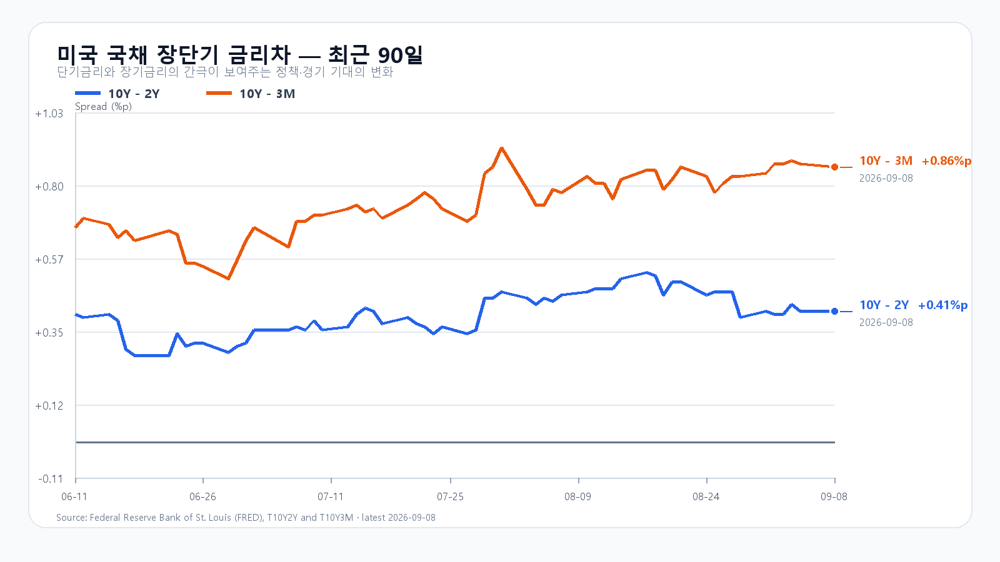
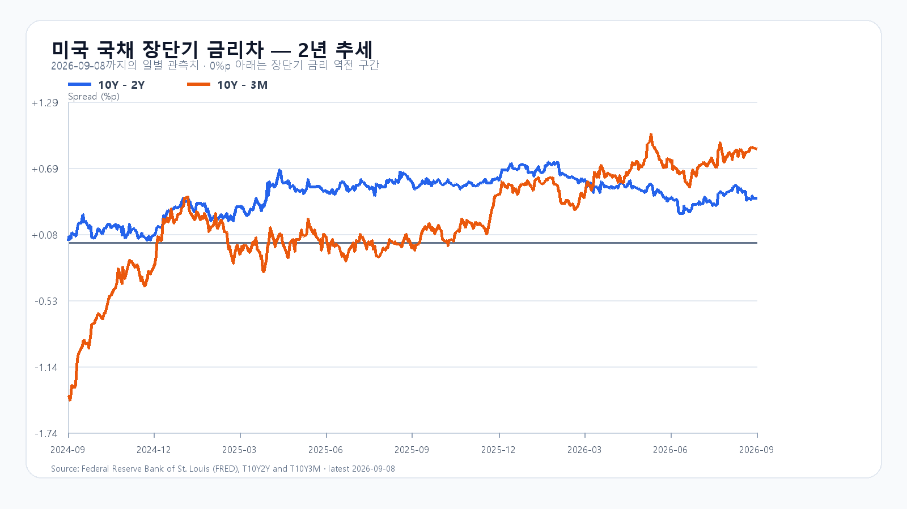

미국 반도체 ETF 상승만으로 국내 메모리주의 동반 강세를 기대하기에는 밤사이 주가의 방향이 갈렸다. 9월 8일 SOXX는 1.64%, SMH는 1.19% 올랐지만 Nvidia는 2.01%, Micron은 1.61% 하락했다. AMD와 Broadcom에 몰린 매수가 삼성전자·SK하이닉스로 이어지는지, 그 반등에 다른 업종도 참여하는지가 오늘 KOSPI의 관건이다.
AI 수요 기대와 메모리 주가는 다른 방향으로 움직였다
AMD는 5.90%, Broadcom은 2.98% 상승했다. 반면 QQQ는 0.08%, TQQQ는 0.29% 내렸다. 반도체 업종 안에서도 주도 종목이 갈렸고, 기술주 전반의 위험 선호가 함께 강해진 장은 아니었다.
| 종목 | 9월 8일 정규장 종가·등락률 |
|---|---|
| QQQ | 718.36달러 · -0.08% |
| TQQQ | 72.16달러 · -0.29% |
| SOXX | 528.40달러 · +1.64% |
| SMH | 573.73달러 · +1.19% |
| Nvidia | 225.73달러 · -2.01% |
| AMD | 505.74달러 · +5.90% |
| Micron | 1,000.26달러 · -1.61% |
| Broadcom | 368.56달러 · +2.98% |
AMD 경영진은 Citi 행사에서 AI 시장과 데이터센터 사업의 성장 전망을 제시했다. 이런 기대는 HBM·첨단 패키징 수요를 뒷받침하지만 경영진 전망과 확정 주문은 다르다. AMD 공식 행사
Qualcomm과 Amazon의 AI 데이터센터 협업은 클라우드 투자가 새로운 칩 공급자로 확장되는 사례다. Amazon 계열사에 부여되는 주식매수권은 상업 합의와 구속력 있는 주문, 실제 구매에 따라 단계적으로 권리가 생긴다. 계약에 등장하는 600억달러는 이 조건의 지급 상한이며, 이미 확보한 매출이 아니다. SEC 공시
메모리 현물가격도 품목별로 갈렸다. 9월 8일 19:10 KST 기준 DDR5 16Gb는 54.333달러로 0.06% 올랐지만 DDR4 16Gb는 91.750달러로 1.61% 내렸다. DDR4 8Gb는 45.364달러로 0.02% 상승했다. NAND 역시 서버·AI 고객 수요가 계약가격을 지지하는 가운데 소비자 현물은 수요 부진으로 횡보한다. 메모리 업체의 실적 기대를 소비자 수요 전반의 회복으로 확대해서는 안 된다. DRAM 현물 · 9월 2일 NAND 주간 자료
7,171까지 갔던 KOSPI가 되돌아온 이유
전날 KOSPI는 7,045.79에서 출발해 7,171.52까지 올랐다가 6,954.52로 마감했다. 종가는 장중 저점 6,951.78에 가까웠다. 삼성전자는 269,500원으로 0.19% 하락했고 SK하이닉스는 1,793,000원으로 0.56% 올랐다. 두 대형주의 가격 방향도 같지 않았다. KOSPI 확정 일봉
마감 후 공개 자료에서 외국인은 6,316억원, 기관은 6,427억원 순매수했고 개인은 3조329억원 순매도했다. 프로그램은 808억원 순매수였다. 그런데도 상승 종목은 231개, 하락 종목은 634개였다. 외국인 순매수 하나만으로 지수 상승의 지속을 판단하기 어려웠던 하루다. 오늘은 반도체의 반등과 함께 하락 종목 수가 줄어드는지도 봐야 한다. 9월 8일 마감 자료
유가는 이 반등의 부담이다. 중동 공급 차질 우려 속에서 장전 브렌트 선물이 99달러대로 올라 수입 비용과 물가 압력을 키우고 있다. 미국 10년물 금리는 9월 8일 4.80%, 2년물은 4.39%로 각각 직전 관측일보다 2bp 상승했다. 3개월물은 3.94%다. 장단기 금리차가 크게 달라지지 않아도 높은 장기금리 자체가 반도체 주가의 상단을 누를 수 있다. 미 재무부 · Reuters 유가 결제 동향
오늘 첫 주요 일정은 10:30 KST 중국 CPI·PPI다. 미국 PPI는 9월 10일, CPI는 11일 각각 21:30 KST에 나온다. FOMC 성명과 경제전망은 한국 시각 9월 17일 03:00, 기자회견은 03:30이다. 중국 국가통계국 · BLS · 연준
오늘의 범위와 KODEX 기준선
기본 판단은 KOSPI 6,900~7,100의 등락이다. 공격 30·관망 50·방어 20을 대응 비중으로 두되, 아래 시나리오 확률과는 별개로 본다. 장중 예상 경로는 6,600~7,350이며 명목 포락 수준은 90%다. 이는 통계적으로 보장된 적중률이 아닌 분석 가정이다.
| 종가 시나리오 | 범위·확률 | 유지 조건 | 무효화 기준 |
|---|---|---|---|
| 기본 | 6,900~7,100 · 50% | 가격이 범위 안이고 외국인 현물 순매매가 0 이상 | 범위 이탈 또는 외국인 순매도 |
| 강세 | 7,100 초과~7,300 · 30% | 7,100 초과·외국인 현물·프로그램 순매수 동반 | 7,100 이하 또는 어느 한 수급의 순매수 중단 |
| 약세 | 6,650~6,900 미만 · 20% | 6,900 미만·외국인 현물·프로그램 순매도 동반 | 6,900 회복 또는 어느 한 수급의 순매도 중단 |
KODEX 레버리지는 전날 112,150원으로 0.79% 하락했다. 장중 범위는 112,065~120,015원이었다. 오늘은 112,000원을 1차 지지, 115,000원을 반등 기준, 120,000원을 저항으로 둔다. 115,000원 회복에 삼성전자·SK하이닉스 상승과 외국인·프로그램 동반 매수가 붙어야 전날 반납한 상승분을 되찾는 흐름으로 볼 수 있다. KODEX 확정 일봉
장전 가격
| 항목 | 가격·변화 | 출처 기준 시각 |
|---|---|---|
| 삼성전자 NXT | 272,000원 · 0.93% | 9월 9일 08:16:56 KST 조회 |
| SK하이닉스 NXT | 1,826,000원 · 1.84% | 9월 9일 08:16:56 KST 조회 |
| 달러/원 하나은행 고시 | 1,341.50원 | 2026-09-09T07:27:08+09:00 |
| Nasdaq100 선물 | 29,536.50 · -0.008% | 2026-09-09T08:06:54+09:00 지연 시세 |
| S&P500 선물 | 7,681.25 · +0.010% | 2026-09-09T08:06:54+09:00 지연 시세 |
| 브렌트 선물 | 99.40 · +1.511% | 2026-09-09T08:06:28+09:00 지연 시세 |
| WTI 선물 | 94.28 · +1.344% | 2026-09-09T08:06:55+09:00 지연 시세 |
NXT · 환율 · Nasdaq100 선물 · S&P500 선물 · 브렌트 · WTI
NXT는 정규장과 별도 시장이다. 선물은 지연 시세이며, 등락률은 출처가 제공한 각 계약의 비교 기준을 따른다.

